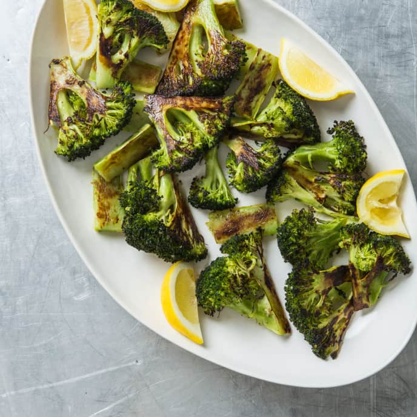

Fast Roasted Broccoli

Ingredients:
- 1 large crown of broccoli
- 3 tbsp EVOO
- (optional) 1 tbsp minced garlic
- 1/2 tsp table salt
- 1 lemon, sliced into wedges
- ground black pepper, to taste
Directions:
- Adjust oven rack to lowest postion, place large rimmed sheet on rack, and preheat oven to 500 degrees F
- Cut crowns into 4 wedges if 3-4 inches in diameter or 6 wedges if 4-5 inches in diameter.
- Place broccoli in large bowl; drizzle with oil and toss well until evenly coated. Sprinkle with salt, and pepper to taste and toss to combine.
- Working quickly, remove baking sheet from oven. Carefully transfer broccoli to baking sheet and spread into even layer, placing flat sides down.
- Return baking sheet to oven and roast until stalks are well browned and tender and florets are lightly browned, 9 to 11 minutes.
- Transfer to serving dish and serve immediately with lemon wedges.